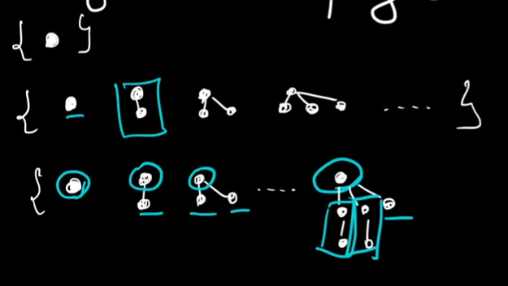

i dokładną pozycję każdego z węzłów.
(2020-10-19)
Drzewa takie, w których zachowujemy orientację całego drzewa
i dokładną pozycję każdego z węzłów.
Nie chodzi nam o drzewa w rozumieniu grafów.
Lista możliwych drzew dla liczby węzłów \([0;4]\):

Spójrzmy na drzewa uporządkowane nieco „z góry”:

Można zauważyć, że każde drzewo jest zbudowane z korzenia oraz z pewnej liczby poddrzew.
Czyli mamy: \[ \mathcal{T} \cong \mathcal{Z} \times \operatorname{SEQ}(\mathcal{T}) \]
Możemy też podejść do sprawy nieco inaczej:
\(T^{(i)}\) — klasa drzew o głębokości \(<i\) - \(T^{(1)} = \mathcal{Z} \times \operatorname{SEQ}(\emptyset)\) - \(T^{(2)} = \mathcal{Z} \times \operatorname{SEQ}(\mathcal{T}^{(1)})\) - \(T^{(3)} = \mathcal{Z} \times \operatorname{SEQ}(\mathcal{T}^{(2)})\)
wizualnie:

Jednakże do liczenia OGF użyjemy tej pierwszej metody: \[ \mathcal{T} \cong \mathcal{Z} \times \operatorname{SEQ}(\mathcal{T}) \]
czyli mamy OGF: \(T(z) = z \cdot \frac{1}{1 - T(z)}\) - \(T(z)(1-T(z)) = z\) - \((T(z))^2 - T(z) + z = 0\) - \(\bold{T(z) = \frac{1}{2}\left( 1 - \sqrt{1 - 4z} \right)}\) - \(\sout{T(z) = \frac{1}{2}\left( 1 + \sqrt{1 - 4z} \right)}\)
Mamy też coś takiego: \(\sqrt{1 - 4z} = \sum_{n=0}^\infty (4z)^n \cdot \binom{\frac{1}{2}}{n} = \sum_{n=0}^\infty \frac{1}{n} \binom{2n - 2}{n-1} \cdot z^n\)
Sprawdźmy dla \(n=4\):
\(\frac{1}{4} \cdot \binom{6}{3} = 5\)
i to się zgadza z tym, co otrzymaliśmy wcześniej